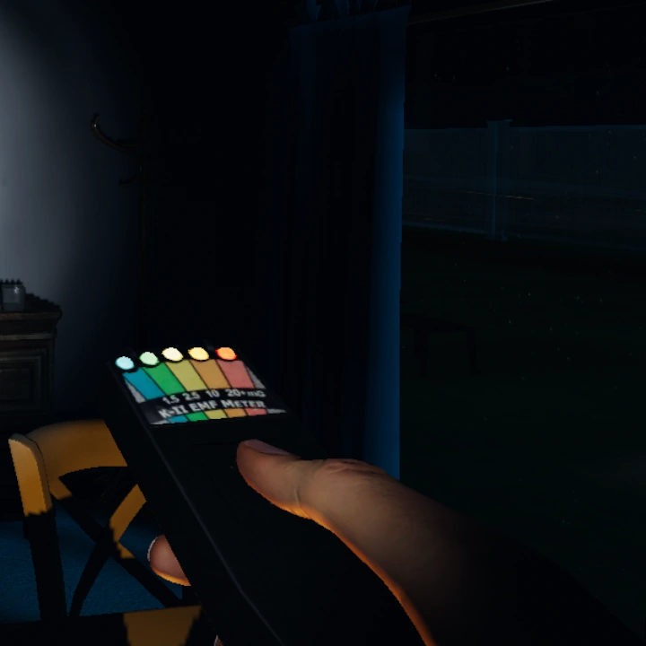
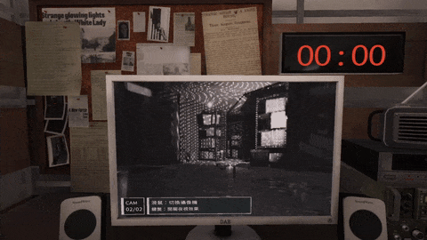
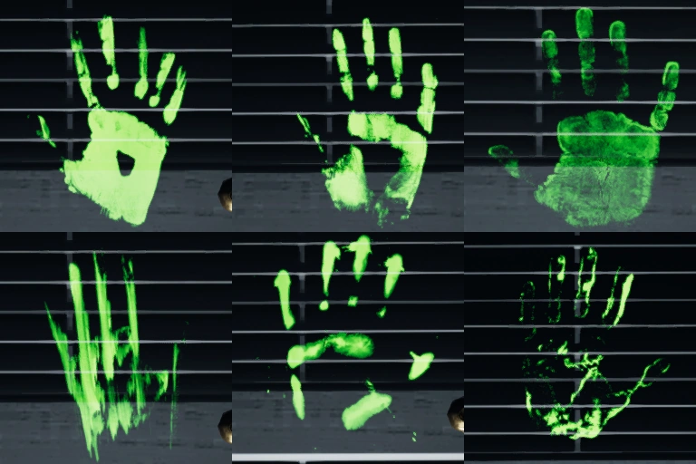
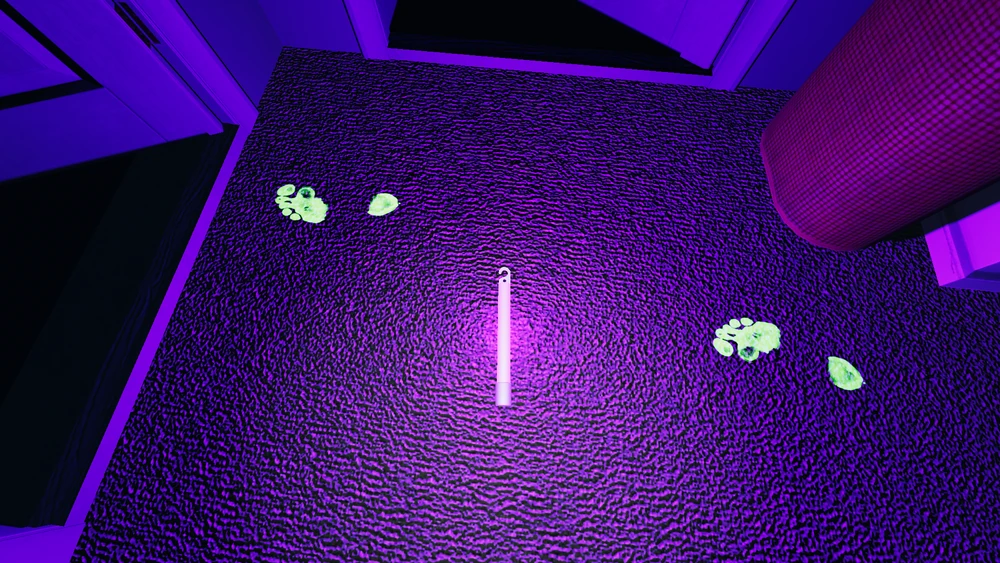
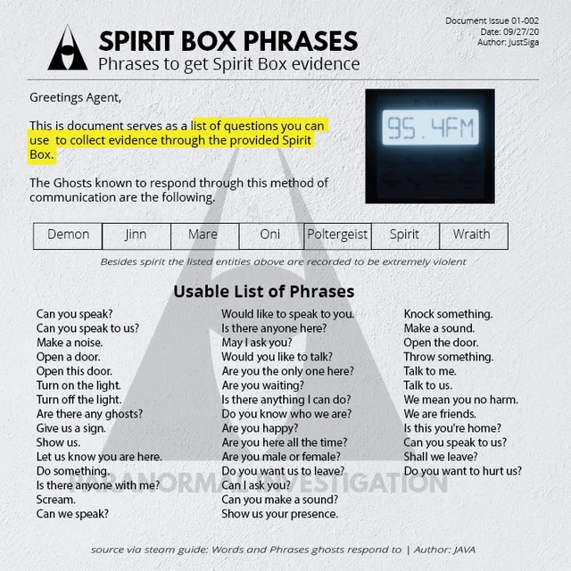
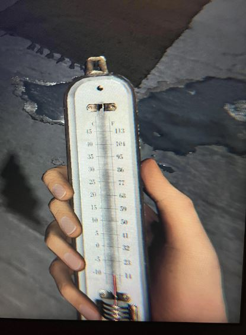

Bizonyítékok
EMF Level 5

Az EMF Reader segítségével mérheted a szellem által kibocsátott elektromágneses jeleket. Ha az eszköz 5-ös szintig villan, biztosan erős aktivitást érzékel, ami sok szellem sajátja. Fontos, hogy tudd: az EMF 5-ös szintet csak akkor rögzítsd bizonyítékként, ha az tényleg gyakori és stabil – például, ha több alkalommal is elérte ezt a szintet, vagy állandóan villog a szellem közelében.
Tipp: Gyakran a szellem „jelenlétének szobájában” éri el az EMF Reader az 5-ös szintet, főleg ha valamilyen interakció történt (pl. ajtócsapkodás, tárgyak mozgatása). Tartsd a szobában az EMF Readert, hogy folyamatosan figyeld a jeleket.
D.O.T.S.

A DOTS Projector egy lézerrácsot vetít ki, amelyen keresztül a szellem árnyképe átsuhanhat. Ha látod a körvonalait áthaladni, az biztos jele a szellem jelenlétének.
Tipp: Állítsd be a DOTS Projectort a szellem jelenlétének szobájában, és figyelj rá, hogy a csapattársak is figyeljék az élő közvetítést a furgonból. Ha egyedül vagy, próbálj a DOTS közelében mozogni, mert gyakran csak akkor tűnik fel a szellem, amikor valaki közel jár hozzá.
Ujjlenyomat


Ujjlenyomatokat találsz, ha a UV Light-tal világítasz a szellem által megérintett helyekre, például ajtókilincsekre, ablakokra vagy villanykapcsolókra. Ez egy kicsit időigényes lehet, mert a szellemek nem mindig hagynak ujjlenyomatot, és csak korlátozott ideig maradnak a felületen.
Tipp: Ha a szellem épp megmozdított valamit, azonnal ellenőrizd a területet UV lámpával. Az ujjlenyomatok csak kb. két percig látszanak, ezért legyél gyors! A só használata is jó módszer: ha a szellem átsétál rajta, ujjlenyomatot hagyhat maga után a környéken.
Ghost Orb

A Ghost Orb egy kicsi, világító gömb, ami a kamera képernyőjén lebeg át a szellem jelenlétének szobájában. Általában sötétben látni őket a legjobban, ezért állíts fel egy kamerát és figyeld az élő felvételt a furgonban.
Tipp: Ha a szellemet egy nagyobb helyen keresed, állíts be több kamerát különböző szögekből, így jobban megfigyelheted a Ghost Orb-ot. Fontos tudni, hogy ha már sikerült azonosítani egy Ghost Orb-ot, nehéz lesz tisztán látni, ha túl sok fény van, szóval kerüld el a világítást.
Szellemírás
A Ghost Writing Book lehetőséget ad a szellemnek, hogy közvetlenül üzenetet hagyjon. Egyszerűen helyezd le a könyvet a szellem jelenlétének szobájába, és várd meg, hogy írjon bele. Néhány szellem nagyon gyorsan hagy üzenetet, mások viszont több időt igényelnek.
Tipp: Tedd le a könyvet a szellem aktivitásának közvetlen helyére, pl. ahol az EMF Reader magasabb értéket mutatott, vagy ahol hidegebb volt a levegő. Ha egy ideig nem történik semmi, próbálj meg mozgatni a könyvet, néha ugyanis jobban működik, ha közelebb viszed a szellemhez.
Spirit-box

A Spirit Box lehetőséget ad, hogy közvetlenül kommunikálj a szellemmel. Ez az eszköz különösen hangulatos (és néha rémisztő), mivel szóban is válaszolhat a kérdéseidre. Fontos, hogy egyedül legyél a szellem közelében, és általában sötét környezetben használd a Spirit Boxot. Kérdésekkel, mint például „Hol vagy?” vagy „Mi a neved?”, érdekes válaszokat kaphatsz.
Tipp: Ha a szellem „félénk”, akkor lehet, hogy inkább csak akkor válaszol, ha egyedül vagy a szobában. Figyelj rá, hogy csapattársaid a furgonból hallgassák a Spirit Boxot, így biztosak lehetnek a bizonyítékban anélkül, hogy veszélybe kerülnél.
Fagyás

Ha mínuszok vannak, vagy látod a leheletedet, az fagyos hőmérsékletet jelent, ami bizonyíték lehet. Ehhez egy hőmérőt használhatsz, de a lehelet is jel lehet, hogy a szellem közelében vagy.
Tipp: Ha nincs nálad hőmérő, figyelj a leheletedre. Ha látod a leheletet, az fagyos hőmérsékletet jelez, tehát biztos lehetsz benne, hogy közel jársz a szellemhez. Érdemes korán ellenőrizni a hőmérsékletet, mivel bizonyos szellemek hidegebb környezetet teremtenek maguk körül már az elejétől.